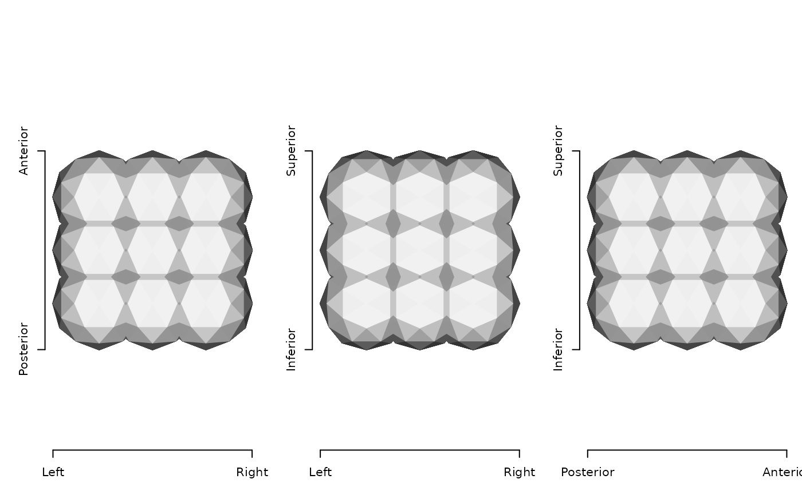
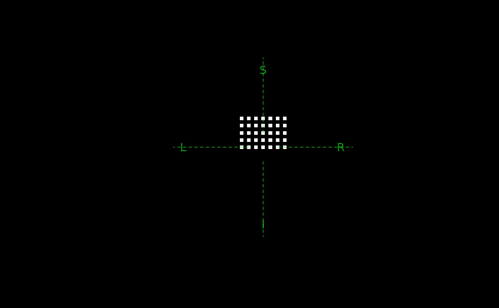
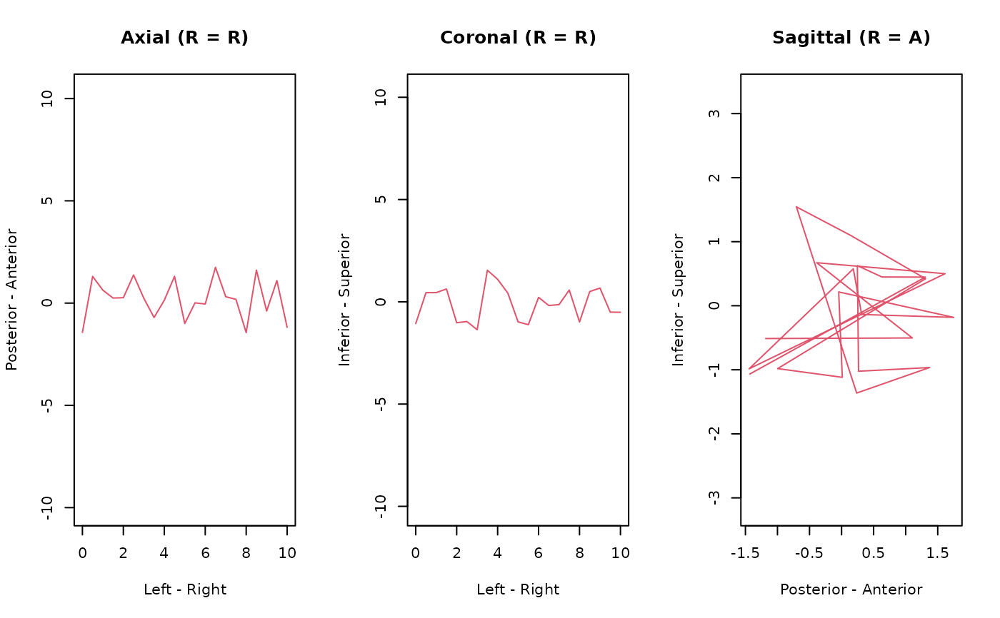
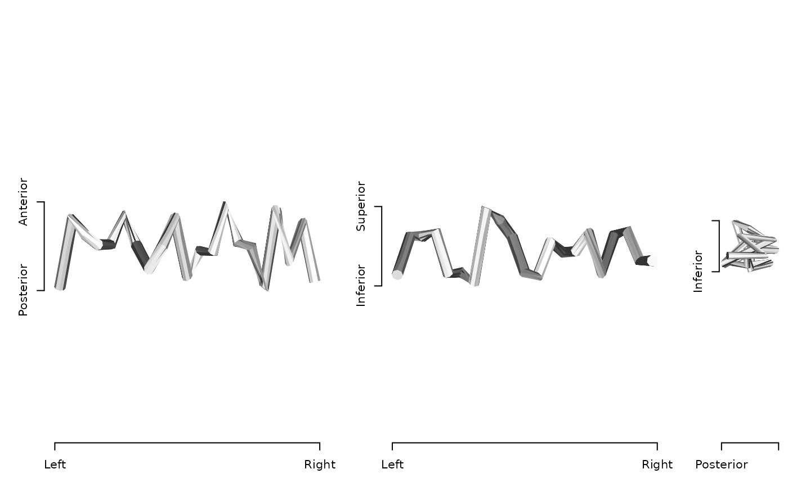

Resolve a region of interest into a chosen representation
Source:R/as_ieegio_roi.R
resolve_roi_as.RdApplies the criteria recorded by as_ieegio_roi and converts the
result into the requested geometry. Where as_ieegio_roi only describes
how to derive a region, resolve_roi_as carries that description
out and hands back an object that is the region.
Usage
resolve_roi_as(
x,
mode = c("auto", "volume", "pointcloud", "streamlines", "surface"),
...
)Arguments
- x
a region of interest, or anything
as_ieegio_roiaccepts; non-ROIinputs are converted first, with no criteria attached- mode
representation to resolve into:
"auto"(default, keep the representation the region already has),"volume","pointcloud","surface", or"streamlines"- ...
tuning arguments for the chosen
mode; see 'Details'
Value
The resolved region: an 'ieegio' volume, surface, or
streamlines object carrying the "ieegio_roi" class and an
"roi_info" attribute whose type reports the representation.
Details
The resolved object is always in world ('RAS') coordinates: geometry
transforms are applied to the coordinates and the stored transform is reset
to the identity, so two resolved regions can be compared directly. The
criteria are cleared from the "roi_info" attribute afterwards, since
they have been spent and the data no longer holds the values they described.
Not every pair of representations is convertible. Streamlines carry tract
connectivity that nothing else does, so mode = "streamlines" accepts
only a streamlines region and fails otherwise. The remaining conversions all
succeed, though some lose information: a mesh resolved as a point cloud keeps
its vertices and drops its faces.
Arguments in ... depend on mode:
"volume"dimandvox2rasgive the target grid explicitly; otherwise one is built along the world axes atresolutionspacing (default0.5) around the region.fill_surfacefills the interior of a closed mesh rather than only marking the voxels it passes through, and needs the ravetools package."surface"lambdasmooths the surface extracted from a point cloud or volume, which also needs ravetools. For streamlines,tube_radiusandtube_sidesset the thickness and the number of sides of the tube built around each tract."pointcloud","streamlines"no tuning arguments.
A resolved point cloud gains a point_radius entry in its
"roi_info", describing the ball to draw around each of its points as
min, median, q95, and max. The last three say what
radius covers at least half, at least ninety-five percent, and all of the
original region; min instead is the radius at which balls on
neighboring points begin to overlap. No other representation carries it.
See also
as_ieegio_roi records the criteria that this function
applies.
Examples
# ---- A volume becomes the point cloud of its voxel centers -----------
vox2ras <- rbind(cbind(diag(2, 3), c(-10, -10, -10)), c(0, 0, 0, 1))
mask <- array(0, c(10, 10, 10))
mask[3:5, 3:5, 3:5] <- 1
roi <- as_ieegio_roi(mask, vox2ras = vox2ras, threshold_lb = 0.5)
# ROI is a volume, resolved as pointcloud
points <- resolve_roi_as(roi, "pointcloud")
print(points)
#> <ieegio ROI [pointcloud]>
#> <ieegio Surface>
#> Header class: basic_geometry
#> Geometry :
#> # of Vertex : 27
#> # of Face index : 0
#> # of transforms : 0
#> Transform Targets :
#>
#> Contains: `geometry`
#>
# covering the voxel reaches its corner, not merely half its spacing
point_radius <- attr(points, "roi_info")$point_radius
print(point_radius)
#> $min
#> [1] 1
#>
#> $median
#> [1] 0.984592
#>
#> $q95
#> [1] 1.38056
#>
#> $max
#> [1] 1.732051
#>
# Plot the point cloud as spheres with radius of `max`, the union of
# the spheres covers the entire mask
plot(points, cex = point_radius$max)

# ---- Points are sampled back onto a voxel grid -----------------------
box <- as.matrix(expand.grid(-3:3, -2:2, 0:4))
volume <- resolve_roi_as(as_ieegio_roi(box), "volume", resolution = 0.5)
dim(volume)
#> [1] 17 13 13
sum(volume[])
#> [1] 175
plot(volume, zoom = 10)

# ---- A tract has no thickness, so it is given a tube body ------------
tract <- cbind(seq(0, 10, by = 0.5), rnorm(21), rnorm(21))
roi <- as_ieegio_roi(tract, type = "streamlines")
plot(roi)

tube <- resolve_roi_as(roi, "surface", tube_radius = 0.2, tube_sides = 8)
plot(tube)

# ---- A threshold expression trims a mesh -----------------------------
vertices <- matrix(
c(0, 0, 0, 1, 0, 0, 0, 1, 0, 0, 0, 1),
ncol = 3, byrow = TRUE
)
faces <- matrix(
c(1, 2, 3, 1, 2, 4, 1, 3, 4, 2, 3, 4),
ncol = 3, byrow = TRUE
)
surface <- as_ieegio_surface(
vertices,
faces = faces,
measurements = data.frame(Curv = c(1, 1, 1, -1))
)
roi <- as_ieegio_roi(surface, threshold_expr = .m1 > 0)
# only the face whose three corners all survive is kept
trimmed <- resolve_roi_as(roi, "surface")
ncol(trimmed$geometry$faces)
#> [1] 1
# `auto` keeps whatever representation the region already has
attr(resolve_roi_as(roi, "auto"), "roi_info")$type
#> [1] "surface"